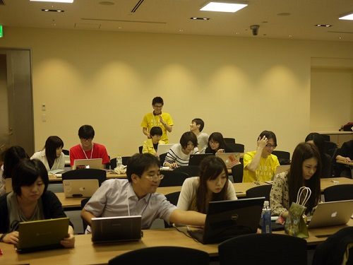

也紀念我們永遠的朋友 李士傑先生（Shih-Chieh Ilya Li）。
RubyKaigi 2013
今年日本的 RubyKaigi 2013 在 5/29 (四)、5/30 (五)、6/1 (六) 舉辦，議程是雙軌同時進行，共計有超過五十場演講及十場 Lightning Talk，並包括三場主題演講 (Keynote)，跟上一屆一樣也是三天。這次有超過 500 位 Ruby 開發者參加，其中有超過 100 位是從國外來的，這樣的規模短期內在台灣可能還是沒辦法達到 (全台灣真的有在用 Ruby 工作的開發者加起來總數說不定都還不到 500 人) 。
photo by @eddiekao
門票的部份比往年貴不少，上一屆的門票是 6,000 日幣，而今年沒有折扣的票種是 35,000 日幣(報名網站)。我運氣很好，因為演講投稿有被大會接受，所以省下了門票錢。
要特別一提的是，RubyKaigi 的門票票種除了一般票、學生票以及早鳥票之外，還有給地區 RubyKaigi 的主辦單位的優待票，還有曾經來參加 Rails Girls 的朋友及主辦單位。另外，即使投稿沒上的，也有部份的優惠。最有趣的是 Ruby Committer 票種，並不是成為 Committer 就可以理所當然的免費參加，要有超過 200 次 commit 數的才是免費，低於這個數字的還是得乖乖買票進場。
Pre-event
在 RubyKaigi 正式開始前一天晚上，Asakusa.rb 主辦了一個暖身活動 (報名網站) ，地點在日本相當知名的食譜網站公司 Cookpad。
photo by @eddiekao
現場來了許多只能在網路上才能見到的高手，而且連 Ruby 的老爸 Matz 也來了。
photo by @eddiekao
現場氣氛十分熱絡，Cookpad 的廚師還親自動手作飯給大家吃，真的是太切題了。
photo by @eddiekao
RubyKaigi
地點
RubyKaigi 的舉辦地點是在日本東京的國際交流館：

photo by @eddiekao
主會議廳有上下兩層樓：
photo by @eddiekao
本次大會主席角谷信太郎 (@kakutoni) 開場就說到：「那些平常只有在教課書裡才會出現的人物，現在很可能就坐在你身邊」。高手、大神們出沒的密度，遠超過我的想像。
T-shirt
大會發給每位會眾一人一件 T-shirt，擺放在報到處，會眾自己報到的時候就自己拿一件，而我因為講者的身份，我又多賺到一件。

photo by @eddiekao
可惜大會只提供 M 跟 L 尺寸，我太胖了，L 號的穿不太下..
名牌
往年聽說就是用名信片大小的空白名牌讓大家自己手寫，不但可以省下印刷的時間跟成本，而且還可讓大家發揮自己的創意。另外，裝名牌的袋子背後的有個拉鏈，裡面可以放一些名片，這樣要跟現場的朋友交換名片的時候就方便多了。
photo by @eddiekao
行動應用
大會有提供手機版的 App 供大家下載 (iRubyKaigi13)。App 的作者是位資深但非常客氣的前輩，為了應景特地採用 RubyMotion 製作，有這個 App 在現場要查詢議程或講師個人資料的時候相當方便。
訊息牆
在演講廳講台旁邊，設立了兩道訊息牆，一邊是來自 Twitter 的資料，另一邊則是來自 IRC。當沒有同步翻譯的的時候，訊息牆會貼心的出現善心人士的即時文字翻譯。
photo by @eddiekao
RubyFriends
Ruby 開發者 (通常又稱 Rubyist) 大多有使用 twitter 的習慣，只要 twitter 發文的內容裡有標記 #rubyfriends 這個 tag 就會被拉進來，並且在現場播放。
photo by @eddiekao
我本來以為播放的是超薄的電視機，後來才知道原來用投影機加上 Android Smart TV 的組合就能做出這樣的效果，效果很不錯，而且成本比想像中的便宜 (參考資料來源)。
Ruby 時計
網址：https://rubyistokei.herokuapp.com/
參考 uniqlo 的 「UNIQLOCK」 概念製作的時鐘，目的是希望讓每位前來參加的 Rubyist 都有出現在螢幕上的機會，讓大家更有參與感。加照片的方式也很簡單，就自己直接 fork 一份指定的 github repository，加完照片資訊後發 pull request 就行了，這對習慣使用 git 做為版控工具的 Rubyist 們來說相當方便，也很切題。
世界 Rubyist Sticker
RubyKaigi 的會眾來自世界各地，這個設計也可以讓與會者更有參與感。台灣雖然不大，但我們這回可是來了五、六個人，當然一定要去衝一下人氣：
photo by @eddiekao
塌塌米
如果你不想聽議程，或是想到外面透透氣，又或是在會場見到許久不見的好友想好好聊一下，在會議廳外面亦備有塌塌米可以隨時坐下來休息或工作，再走過去幾步就有 Microsoft 提供的免費飲料：
photo by @eddiekao
中午用餐時間塌塌米則轉變成野餐型式：
photo by @eddiekao
講師
講者名單裡面就有 16 位 Ruby Core Committer，陣容相當豪華，小弟有幸能跟這些講師排在一起，真的是有些心虛。
議程
三天共計有三場主題演講 (Keynote)，四十餘場一般演講以及十場 Lightning Talk，二軌議程同時進行。身為地主國而且又是 Ruby 之父的 Matz 當然是免不了一定要來一場的：
photo by @eddiekao
至於其它精彩內容也不需要多做介紹，直接參考 RubyKaigi 議程頁面會得到更多的資訊。
演講
在 RubyKaigi 沒有司儀、沒有議程主持人，也沒有講者或主題的簡介或開場，直接自己上台，接上投影機自己喊開始，全部採「自助式」的方式進行。講者自己控制時間，時間到就自己下台換下一位準備上台，相當有趣。
演講內容只有日文跟英文兩種選擇。日文演講的議程，現場有提供日翻英同步口譯，但英文演講則沒有提供，因為大會期望與會者都應該聽得懂英文。
Lightning Talk
每個人只有五分鐘的時間，而且必須用英文演講。時間一到旁邊的「ドラ娘」會敲鑼，並且將訊號線切斷：
photo by @eddiekao
常參加國內技術研討會的朋友對 LT 應該不陌生，很可惜大家時間都控制得很好，十個 LT 裡只有一個被拔線。
Ruby Committer v.s. the World
Ruby 不愧是發源自日本的程式語言，平常要有機會可以跟 Ruby Committer 近距離接觸可能沒那麼容易，這次活動議程裡有一場叫做 「Ruby Committers vs. the World」 ，就是請這些 Committer 們全部一起上台跟大家互動，或是討論 Ruby 之後的方向。一口氣看到台上大概二、三十位的 Ruby Core Committer 排排坐，雖然他們討論的內容是日文我沒能全部聽懂 (這個時段沒有同步翻譯)，但依舊感到十分熱血。
photo by @eddiekao
TRICK 2013
網址：https://sites.google.com/site/trickcontest2013/
這一個小時的議程我印象非常深刻，因為這是一場我覺得非常「變態」的議程。
請不要誤會，這裡的 「變態」 是稱讚意味。TRICK 這個比賽並不是要寫出什麼偉大的程式，而是希望參賽者在限定的檔案大小內，儘可能使用 Ruby 神奇或鮮為人知的技巧來寫程式。每個得獎作品，真的都非常變態，讓現場的大家驚嘆怎麼會有人想得出來把 Ruby 寫成這樣。
評審陣容同樣也是非常豪華：
photo by @eddiekao
Official Party
Official Party 是在第二天的晚上舉行，地點就在會場附近，活動由 Github 贊助，每個人都可以自由參加。加上因為我自己的演講結束了，輕鬆很多，可以放心大膽的吃吃喝喝，也在現場用我破破的英文認識不少日本朋友。
photo by @eddiekao
書商
近年國內的技術研討會也都有書商的出現，RubyKaigi 則是請淳久堂在現場賣書。
photo by @eddiekao
有趣的是，淳久堂帶來的這些書，書的作者本人幾乎都有在現場，買完書可以馬上厚臉皮的找作者簽名，相當方便。
贊助商
打開 RubyKaigi 網站的贊助商列表，據長期待在日本的友人說，這個贊助商列表幾乎都是目前日本一線的軟體公司，在不太重視軟體產業的台灣，這大概是很難看到的畫面了。
除了現金贊助之外，也有一些其它的物資贊助，例如，Heroku 贊助大會三天活動的便當、Microsoft 讓大家在會場有免費的飲料可以喝，:DeNA 贊助現場的 WiFi，Ricoh 贊助現場的投影相關設備，Github 則是贊助 Official Party。
不得不提一下，這回大會的便當不錯吃，而且還挺高級的 (據說是日本知名的燒肉便當)：
photo by @eddiekao
RubyHiroba (Hiroba 日文為「廣場」意思)
這個活動是接在 RubyKaigi 的隔天，需要報名，但免費參加的活動。活動在日本 Microsoft 舉辦：
photo by @eddiekao
令我有些意外，原來日本 Microsoft 對 Ruby 有這麼多的贊助，除了前面提到贊助 RubyKaigi 的免費飲料外，也提供 RubyHiroba 的場地使用，這在台灣可能比較少見。
不愧是大公司，雖然這只是一個角落的照片，還是可以看得出來工作環境相當不錯：
photo by @eddiekao
照片右下角不小心入鏡的正是 Ruby 的核心成員之一，Rubygems 跟 RDoc 的維護者 Eric Hodel。
上網回答問題的話 (Ruby 程式相關的問題，網址：https://codeiq.jp/ace/ramen_burger/q330)，中餐可以得到一份 「拉麵漢堡」。
另外，活動也有製作很可愛的貼紙：
photo by @eddiekao
基本上 RubyHiroba 並沒有任何即定的議程，跟 RubyKaigi 比起來相對比較輕鬆。除了很多的 Lightning Talk 之外，在這個「廣場」的各個角落有一些同好會的聚集 (例如 dRuby 或是地區 Ruby 社群)，如果不想參與，也可以自己找個角落坐下來寫寫程式，或是去跟偶像們搭訕、請益。我在現場還跟著一位前輩學著折了紙做的紅寶石：
photo by @eddiekao
可惜我的日文能力太差，不然應該還可以認識更多的新朋友。
Rails Girls
Rails Girls 在全世界好幾個地方都有分支，成立的目的是希望可以給女性提供一個技術交流、學習的管道，而且並不一定限定只學習 Rails。
Rails Girls Tokyo 在 RubyHiroba 也有一個角落，一開始我本來以為這會是台上講師講課，然後其它人坐在台下聽的方式進行，後來經由 organizer Yuki Torii 的說明才知道，原來她們並不一定每次都會像在學校”上課”的形式，反而是由一個教練 (Coach) 帶一到兩位學員進行小班制教學，以維持較好的學習品質。
photo by @eddiekao
photo by @eddiekao
photo by @eddiekao

photo by @eddiekao
photo by @eddiekao
心得
日本不愧是 Ruby 的發源地，不僅與會的 Ruby Committer 數量多，而且有一種整個日本 Ruby 圈在這個星期都動起來的感覺。除了地區社群的人也出現在這邊宣傳之外，整個星期除了 RubyKaigi 本身三天的行程之外，前後或晚上都有活動，幾乎可以說是 「Ruby 週」 了。
除了 RubyKaigi 這種年度大型的聚會外，日本地區性的 Ruby 社群也相當活躍，例如 Asakusa.rb、okinawa.rb 等社群，各有各的活動跟當地特色。
在 RubyKaigi，資深前輩或高手出現的密度，真的可以用滿地都是來形容。我沒誇張，除了 Ruby Core Committer 之外，我大概書架上所有的日文 Ruby 相關書籍的作者我都遇到本人了 (我還跟 Ruby Hacking Guide 一書的作者青木峰郎握到手了) ，而且這些高手們都十分的客氣。我在會場看到我的偶像 Aaron Patterson，就馬上厚臉皮的衝上前去拍照：
photo by @eddiekao
可以跟這麼一大群來自各地而且喜歡 Ruby 而且厲害的朋友聚在一起，雖然彼此說著不同國家的語言，但仍有著 Ruby 這個共同的語言，溝通起來並沒想像中的困難。
話說回來，以我自己曾經參加過的幾個程式語言相關的技術研討會來說，Ruby 相關的技術研討會似乎算是相對比較國際化的。就以台灣在 2012 年底舉辦的 RubyConf Taiwan 來說，就有共計 10 個國家的人前來參加。
另外，關於活動贊助這件事，我自己曾主辦過一些中、小型活動，知道贊助一向都是活動最麻煩的事。以 RubyKaigi 的贊助來說，即使是最大贊助商，也只有在 Keynote 之前上台的幾分鐘的致詞 (sponsor appeal)，或者是換得一場五分鐘的 Lightning Talk。將贊助跟議程分開，我個人覺得這是很棒的事。我認為 Keynote (主題演講，日文稱做 「基調講演」) 是整場活動的主軸，如果因為贊助而出售給贊助商，贊助商很可能會因為為了推廣自家產品而讓主題演講的主軸有所偏差，我想這是主辦單位跟會眾們所不願樂見 的。
雖然這回 RubyKaigi 的門票不算太便宜，但我覺得這樣三天的活動非常值得，2014 年再舉辦的話，我一定會再報名參加。
photo by @eddiekao
最後，感謝 RubyKaigi 的籌辦團隊，給我們這群喜愛 Ruby 的人帶來了一個這麼好的活動，辛苦了。
You may be interested in the following articles:
- Code Reading @ RubyKaigi 2013 - 2013-06-05
Special


Address：No.128, Sec.2, Academia Rd., Institute of Information Science, Academia Sinica, Nangang District, Taipei City 11529, Taiwan (R.O.C).
Privacy Policy. Terms-of-use